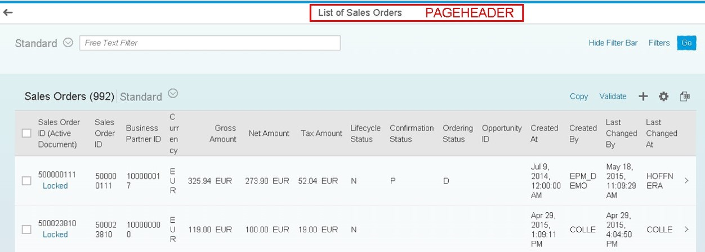

You can replace standard UI texts in smart templates. There are generic texts coming from the generic framework (for example, the button texts for draft concept) belonging to the template components (for example, list report and object page). The following sections describe how applications can exchange texts that are visible in the smart templates.
When you have created your specific application component, for example, in the SAP Web IDE, standard texts are available from a specific template component (sap.suite.ui.generic.template) and from the generic template component (sap.ui.generic). The following image shows a text coming from the specific application component using sap.suite.ui.generic.template.ListReport. The text List of Sales Orders overwrites the original List Report Template.

Texts of the list report or the object page can be overwritten by application-specific texts. Texts from the Generic Template Component and the Generic Application Component cannot be replaced.
The following folders and files are generated by the SAP Web IDE when using the wizard and selecting Smart Templates:
<root-folder>
|—i18n
|—<shortened template component name>, for example, List Report and Object Page
|—<entitySet>
|—i18n.properties
The app descriptor (manifest.json file) of a purchase order application, for example, specifies the SAPUI5 models.
"sap.ui5": {
...
"models": {
"i18n": {
"type": "sap.ui.model.resource.ResourceModel",
"uri": "i18n/i18n.properties"
},
"i18n|sap.suite.ui.generic.template.ListReport|POHeaders": {
"type": "sap.ui.model.resource.ResourceModel",
"uri": "i18n/ListReport/POHeaders/i18n.properties"
},
"i18n|sap.suite.ui.generic.template.ObjectPage|POHeaders": {
"type": "sap.ui.model.resource.ResourceModel",
"uri": "i18n/ObjectPage/POHeaders/i18n.properties"
},
"i18n|sap.suite.ui.generic.template.ObjectPage|POItems": {
"type": "sap.ui.model.resource.ResourceModel",
"uri": "i18n/ObjectPage/POItems/i18n.properties"
The URI reflects the folder path to the resource model. The model's name i18n|sap.suite.ui.generic.template.ObjectPage|POHeaders is separated by lines used to identify the specific template component and entity set for which the resource model can be enhanced by editing the i18n.properties file.